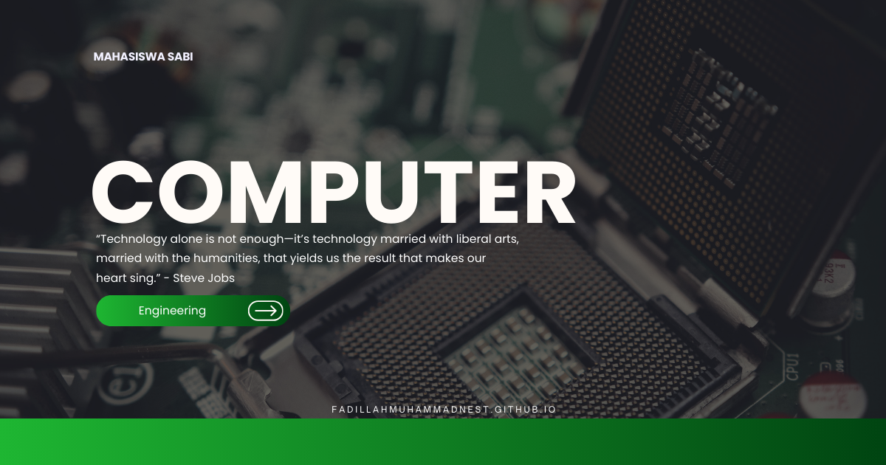

Teknologi Blockchain
Teknologi Blockchain dalam Teknik Komputer: Membangun Sistem Digital yang Aman, Transparan, dan Terdesentralisasi
Teknologi Blockchain merupakan mata kuliah yang mempelajari konsep, arsitektur, dan penerapan sistem pencatatan data terdistribusi yang menggunakan teknik kriptografi untuk menjaga integritas dan keamanan informasi. Dalam program studi Teknik Komputer, blockchain menjadi salah satu teknologi penting dalam pengembangan sistem digital terdesentralisasi, transaksi elektronik, keamanan jaringan, dan pertukaran data yang dapat diverifikasi tanpa bergantung sepenuhnya pada satu otoritas pusat.
Fokus yang Dipelajari
- Konsep dasar blockchain, distributed ledger technology (DLT), dan sistem terdesentralisasi.
- Struktur blok, transaksi, cryptographic hash, digital signature, dan mekanisme pengamanan data.
- Algoritma konsensus seperti Proof of Work (PoW), Proof of Stake (PoS), dan mekanisme konsensus lainnya.
- Pengembangan dan penerapan smart contract untuk otomatisasi transaksi dan proses digital.
- Arsitektur jaringan public blockchain, private blockchain, dan consortium blockchain.
- Pengembangan aplikasi terdesentralisasi (decentralized applications atau DApps) dan integrasi blockchain dengan sistem komputer.
- Analisis keamanan, skalabilitas, privasi, interoperabilitas, serta efisiensi sistem blockchain.
Perannya dalam Teknik Komputer
Teknologi Blockchain memperkuat pemahaman mahasiswa mengenai integrasi jaringan komputer, sistem terdistribusi, kriptografi, pemrograman, basis data, dan keamanan siber. Mahasiswa mempelajari bagaimana komputer dalam suatu jaringan dapat memvalidasi dan menyimpan catatan transaksi secara bersama melalui protokol konsensus. Pengetahuan ini mendukung perancangan sistem yang memiliki ketahanan terhadap manipulasi data, kemampuan audit, dan mekanisme kepercayaan digital yang terstruktur.
Kegunaan dalam Masyarakat, Riset, dan Pekerjaan
Blockchain memiliki potensi penerapan dalam berbagai bidang seperti layanan keuangan digital, manajemen rantai pasok, verifikasi sertifikat pendidikan, identitas digital, layanan kesehatan, dan administrasi publik. Teknologi ini dapat membantu meningkatkan ketertelusuran transaksi, memverifikasi keaslian dokumen, serta mendukung pertukaran informasi antarorganisasi dengan mekanisme pencatatan yang dapat diaudit.
Dalam penelitian, blockchain digunakan untuk mengkaji keamanan sistem terdistribusi, optimasi konsensus, perlindungan privasi, integrasi Internet of Things (IoT), dan efisiensi transaksi digital. Kompetensi ini relevan untuk profesi seperti blockchain developer, smart contract engineer, blockchain security analyst, distributed systems engineer, software engineer, dan blockchain researcher.
Tren Teknologi Blockchain Saat Ini
Perkembangan blockchain semakin mengarah pada peningkatan skalabilitas, interoperabilitas, keamanan, dan efisiensi energi. Teknologi seperti Layer 2 scaling, zero-knowledge proofs (ZKP), cross-chain interoperability, dan sistem konsensus yang lebih efisien menjadi perhatian dalam pengembangan jaringan blockchain modern. Inovasi tersebut bertujuan meningkatkan kapasitas transaksi, mengurangi biaya operasional, dan memperkuat perlindungan informasi.
Tren lainnya adalah integrasi blockchain dengan Internet of Things (IoT), artificial intelligence (AI), decentralized identity (DID), tokenisasi aset, dan smart contract. Integrasi ini membuka peluang pengembangan sistem identitas digital, pencatatan data perangkat pintar, serta otomatisasi proses bisnis yang dapat diverifikasi. Namun, penerapannya tetap membutuhkan evaluasi terhadap keamanan kontrak pintar, regulasi, privasi, biaya, dan kesesuaian teknologi dengan kebutuhan sistem.
Kesimpulan
Teknologi Blockchain merupakan mata kuliah yang memperluas kompetensi mahasiswa Teknik Komputer dalam merancang dan mengembangkan sistem digital terdistribusi. Dengan menguasai kriptografi, jaringan komputer, mekanisme konsensus, smart contract, dan keamanan informasi, mahasiswa dapat berkontribusi dalam penelitian maupun pengembangan solusi teknologi yang transparan, dapat diaudit, dan mendukung inovasi digital di berbagai sektor.
Mahasiswa Sabi
©Repository Muhammad Surya Putra Fadillah